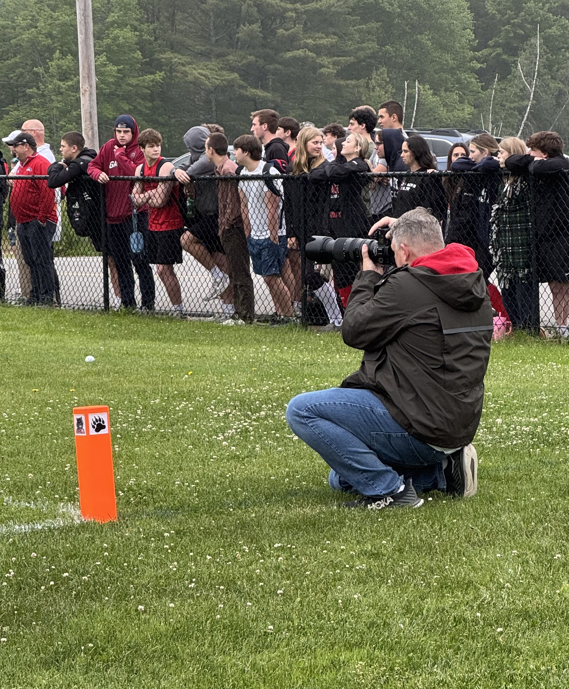
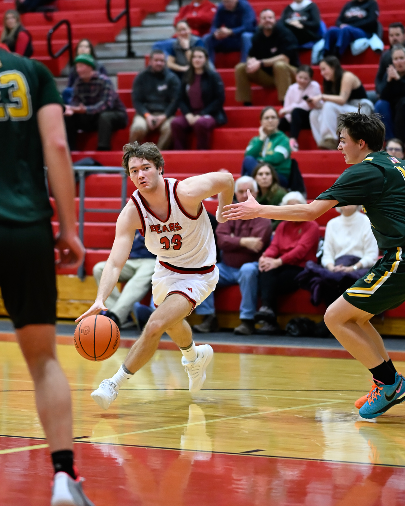
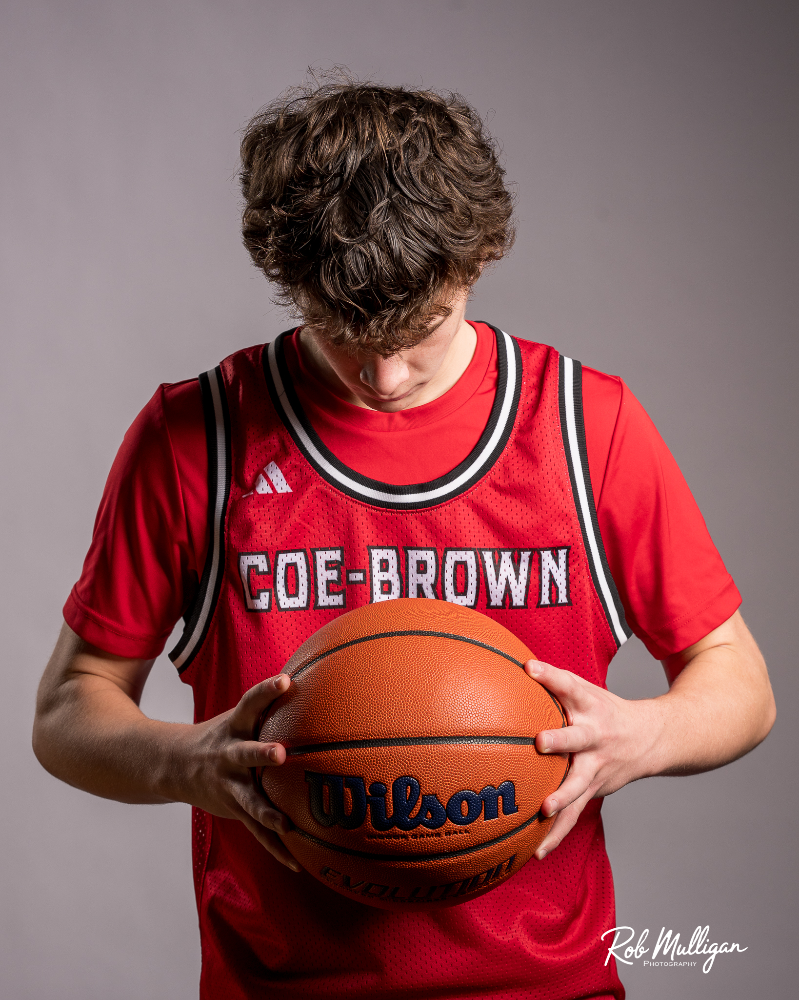
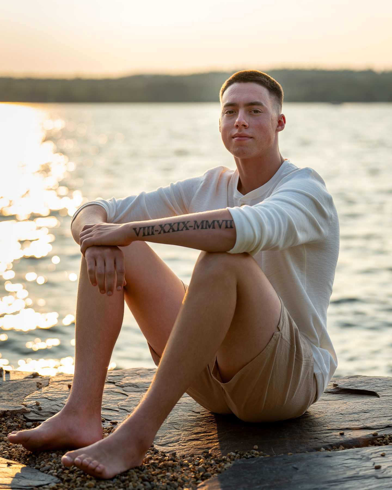

603
603 is home: New Hampshire, and the schools, athletes, families, and communities that supported this from day one.

Hi, I'm Rob, the photographer behind 603 In Focus.
I'm a sports, senior, and portrait photographer based in Strafford, NH. I photograph athletes, seniors, families, and teams across New Hampshire. I'm also a dad who spent years on the sidelines watching my own boys play, and that's where all of this started.
THE BEGINNING
603 In Focus didn't begin with a business plan. It began at a high school game.
In 2017, my oldest son started playing sports at Coe-Brown Northwood Academy, and I started bringing a camera along. I just wanted to capture the memories.
Basketball. Soccer. Volleyball.
Before long, the camera came to every game. The photos got better, and something unexpected happened. Players started using them as profile pictures. Parents started following my work. My photos were becoming part of other families' memories, not just my own.
At an end-of-season banquet, one player thanked me with a line I've never forgotten:
"It's a pretty amazing fact that your pictures account for about 90% of our team's profile pictures."
It wasn't really about photography. It was proof that the photos mattered to the people in them.

A NEW PERSPECTIVE
After a varsity soccer game, a parent walked over and said:
"I looked all over and couldn't find any way to pay you for these really great treasures."
I had never considered turning photography into a business. But that moment showed me how much these images meant to families. They weren't just digital files. They were memories. That conversation planted the seed for what became 603 In Focus.
THE NAME
603 is home: New Hampshire, and the schools, athletes, families, and communities that supported this from day one.
In Focus is the craft. In sports, the moment you want lasts a fraction of a second. Focus, timing, and preparation all have to come together in that one frame. That's how I approach everything I do.
603 IN FOCUSWhere every shot counts.
MORE TO THE STORY
Sports opened the door, and it led me to portraits. I've always loved dramatic athlete portraits, with simple backgrounds, intentional lighting, and athletes looking as confident and powerful as they feel in the game. That pushed me to learn studio lighting and posing, which led to Media Days and then senior portraits.
Different setting. Different story. Same purpose: helping people see themselves at their very best.


THE APPROACH
By day, I've spent more than 20 years as a data engineer. That background shapes how I run this business. I plan the lighting before every Media Day, scout locations before every senior session, and keep improving the experience from the first conversation to final delivery.
A few things will never change:
Focus, timing, and preparation come together in every frame.
WHAT CLIENTS SAY
"I cannot say enough good things about Rob Mulligan and his 603 InFocus business… He is extremely professional and his ability to take pictures and be creative with them is outstanding."
603 IN FOCUS
Senior portraits, family photos, sports coverage, headshots, or a full team Media Day: I'd love to help tell your story.
Book a Session